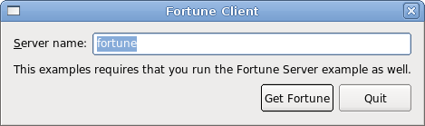

Local Fortune Client Example
Demonstrates using QLocalSocket for a simple local service client.
The Local Fortune Client example shows how to create a client for a simple local service using QLocalSocket. It is intended to be run alongside the Local Fortune Server Example.

Files: